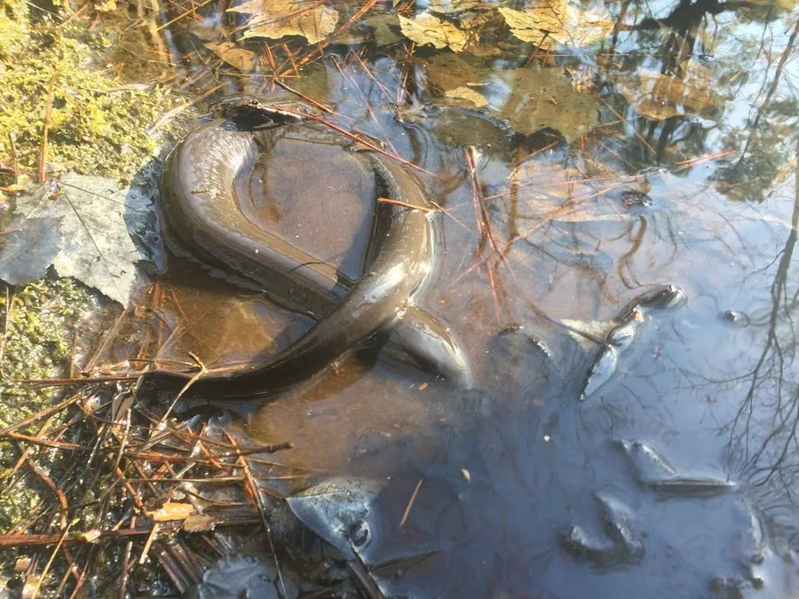

两栖动物 · 动物界
两栖鲵 Amphiuma means

北美洲东南部的水生蝾螈，身体细长，四肢退化得只剩两个脚趾，终生生活在沼泽和沟渠中，以鱼虾为食。
- 分类
- 门脊索动物门纲两栖纲目有尾目科两栖鲵科属两栖鲵属
- 栖息环境
- 北美洲东南部的沼泽、沟渠、池塘和稻田等静水环境
- 地理分布
- 美国东南部
- 保护级别
- IUCN 无危（LC）；非中国原产，在中国无保护级别
物种志
两栖鲵体长 60–100 厘米，身体细长似鳗，呈深灰、黑褐或橄榄褐色，腹部颜色较浅；四肢极度退化，细小得像针，每只脚只有两个脚趾，因此得名；眼睛小，没有眼睑，鳃裂终生保留，但没有外鳃。
它生活在北美洲东南部的沼泽、沟渠、池塘和稻田中，白天藏在泥洞、水草和杂物下，夜间捕食小鱼、虾、蟹、蠕虫、昆虫和蛙类。两栖鲵主要靠肺呼吸，每隔一段时间浮到水面换气，也能通过皮肤辅助呼吸；旱季可钻入泥中休眠。繁殖期在春季，雌螈在潮湿的巢穴中产卵并守护。它体型大、牙齿锋利，受惊时会咬人，捕捉时需小心。
形态与习性
- 食性小鱼、虾、蟹、蠕虫、昆虫和蛙类
- 体长约 60–100 cm
- 四肢四肢细小，每脚仅两个脚趾
- 呼吸以肺呼吸为主，皮肤辅助呼吸
- 繁殖春季产卵，雌螈守护卵块
- 寿命约 20 年以上
趣味知识
- 两栖鲵的四肢退化得只剩两个脚趾，几乎像一根细针。
- 它体型大、牙齿锋利，受惊时会咬人，捕捉时要小心。
- 两栖鲵主要靠肺呼吸，每隔一段时间要浮到水面换气。